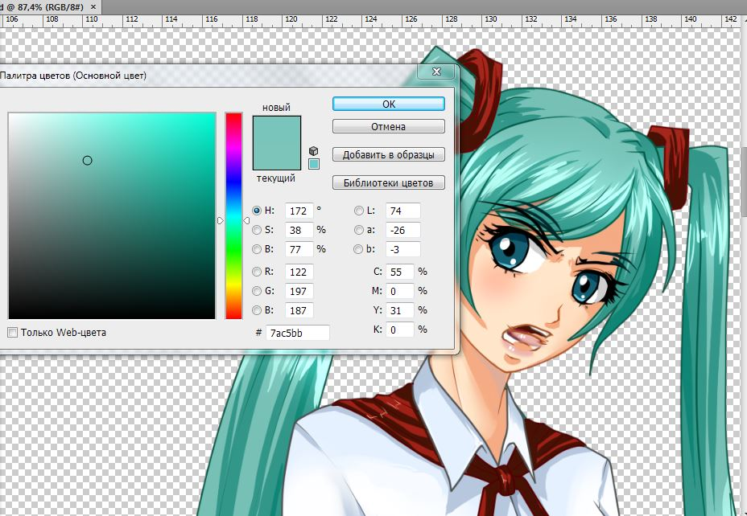

peregarrett написал(а):
А что, может одобрит.
Олий Мушукрухоний - прям даже Древним Римом почему-то повезло.
Ударение на "и" в обоих случаях, а то мало ли.

7 дней лета |
Вы здесь » 7 дней лета » Флудильня » Бар "7 летних ночей" - 7

А что, может одобрит.
Олий Мушукрухоний - прям даже Древним Римом почему-то повезло.
Ударение на "и" в обоих случаях, а то мало ли.

Таки смог перевести, только про Чесса не до конца ясно

только про Чесса не до конца ясно
Персидская лексика. Я остальные тюркские дальше бир, икки, уч, ким, мен, нима тоже еле-еле из-за этого понимаю. Зато кое-что из письменного таджикского уразуметь могу.
Вот бывает, зацепится что-то в голове, так что проще реализовать идею, чем забыть.
Соломон. Прекрасное утро, Эухения. Ты не знаешь, нашелся ли Алехандро?
Эухения. Нашелся? А он терялся? Я уверена, Алехандро побежал в деревню, чтобы разжиться там у пеонов кукурузной самогонкой.
Серхио. Нет, не говори так, Эухения. Алехандро — это фанатик науки и великий изобретатель. Сейчас, в век пара и электричества, когда перед человечеством открываются новые горизонты, тратить кукурузу на самогонку — преступление перед человеческим разумом! Алехандро никогда не смог бы так поступить!
Елена. Ах, Серхио, но где же он тогда?
Хулиана. А я знаю, а я знаю, он пошел в сторону Старого Ранчо.
Все. Старое Ранчо, Старое Ранчо… (Хулиана хватает со стола блюдо с печеньем и убегает).
Эухения. Хулиана, несносная девчонка! Я сейчас тебе задам! (Убегает за Хулианой).
Серхио. Эухения, постой! (Убегает за Эухенией).
Елена. Соломон, долг кабальеро — найти сеньора Алехандро!
Соломон. Да, Елена (Уходит под руку с Еленой)
Отредактировано 22й (2017-01-13 18:42:32)
Verano eterno
Форуму теперь ещё и сериалы вспоминать.

МГТС не дает мне зайти в тему "Мику-7дл"
Там что, кто-то хентай запостил?)
МГТС не дает мне зайти в тему "Мику-7дл"
Там что, кто-то хентай запостил?)
МГТС тот ещё забавник. Периодически он шалит, как ему вздумается.
Хентая в Мику-треде нет.


Вопрос к Богу: чем будет отличаться 7дл рут Слави от классик рута? Типа персонаж один, выходит тупо другая цепочка событий? И еще, как скоро можно ждать нового Славярута, если По инфе из шапок пивотредов выходит, что Славя/Уля в приоритете?
Ps: когда закончатся руты героинь, ты перестанешь расширять этот мод?

Вопрос к Богу: чем будет отличаться 7дл рут Слави от классик рута? Типа персонаж один, выходит тупо другая цепочка событий?
Я, конечно же, не бог, но попробую ответить за него...
Насколько я понял, то изменяется история. В 7ДЛ-рутах можно узнать некоторую информацию, которые помогут в будущем (В ответах на вопросы (Или как назывался тот рут?)).
А классик... В классик рутах автор старается придерживаться классического БЛ (но это не точно).
Хотя возможно я ошибаюсь и ввожу в заблуждение других...
Отредактировано Vegeta (2017-01-17 22:34:16)
Вопрос к Богу: чем будет отличаться 7дл рут Слави от классик рута? Типа персонаж один, выходит тупо другая цепочка событий? И еще, как скоро можно ждать нового Славярута, если По инфе из шапок пивотредов выходит, что Славя/Уля в приоритете?
Ps: когда закончатся руты героинь, ты перестанешь расширять этот мод?
Ну, раз вопрос к Богу, то я, конечно же, отвечу 
Я, конечно же, не бог, но попробую ответить за него...
Насколько я понял, то изменяется история. В 7ДЛ-рутах можно узнать некоторую информацию, которые помогут в будущем (В ответах на вопросы (Или как назывался тот рут?)).
А классик... В классик рутах автор старается придерживаться классического БЛ (но это не точно).
Хотя возможно я ошибаюсь и ввожу в заблуждение других...Отредактировано Vegeta (Сегодня 22:34:16)
Тут вы немножко неправы - Классик рут сильно затрагивает вопросы о структуре реальности Совенка, так называемые "ОТВЕТЫ"; космологию мода, если хотите
В 7дл рутах же большее внимание уделено отношениям Семена с девушкой
7ДЛ - драма, классик - экшн.
Ps: когда закончатся руты героинь, ты перестанешь расширять этот мод?
Это когда ещё будет. С лета 2015 as yet вышли 6 рутов из 16, меньше половины. Ещё Юля и возможный оверхол 7ДЛ-рута Лены.
Отредактировано Amaurea (2017-01-18 01:22:02)
7ДЛ - драма, классик - экшн.
Когда-то было 7ДЛ - уняня, Классик - ОТВЕТЫ.
Главное отличие - падает/не падает с крыши. На все остальные критерии пока и не смотрите - вот мой совет.
Как будет в дальнейшем - Аллах его знает. Лишь бы было, и история получила бы логическое завершение по всех открытым фронтам.
Отредактировано Dantiras (2017-01-18 02:07:33)
Когда-то было 7ДЛ - уняня, Классик - ОТВЕТЫ.
А потом появилась Мику-7дл и что-то не уняня.

Да, рут [Мику-7дл] будет полубессюжетная уняня про романтику и фансервис. Потому что я могу (= и пора бы немного отдохнуть от мрачных классиков/одиночек.
Но что-то пошло не так ¯\_(ツ)_/¯

Ну и мсье Чесс - олий мушукрухоний.
Чобля?! Стоило только ненадолго уйти, и уже вот, в душу котовью наклали безжалостно!
Чобля?! Стоило только ненадолго уйти, и уже вот, в душу котовью наклали безжалостно!
Вот так и говори хорошие вещи о коте.
Вот так и говори хорошие вещи о коте.
Кот же о вас хорошие вещи на немецко-фашистком не говорит? Давайте уже соблюдать культуру общения, машу хвать.
Чатик замер, поэтому внесу немного фантазии.
lk "Ну что, ты опять не смог?"
"Ехидный Локи вновь встречал меня на том же самом месте и с той же самой улыбкой."
dr "Нет. Но с каждым разом выходит всё лучше. Погляди сам, после каждого погружения события меняются."
lk "Да. Что есть - то есть, не спорю. Но ты уверен, что мы расшатаем тот мир настолько, что достигнем цели?"
"Он отвернулся, глядя на Герка, лежащего на одной из кроватей комнаты с устройством. Формально, единственной целой комнаты."
lk "Он совсем плох. Того и гляди, в новом цикле поедет разбираться с проблемами. Сам понимаешь, те воспоминания вносят коррективы в поведенческий шаблон и сдвиги могут быть не всегда положительными."
dr "Система всё ещё не откорректирована. Алгоритм срабатывает слишком рано. Он должен быть запущен в конце процесса, но идёт по какой-то другой причине."
mi "Система симуляции готова к запуску."
"Звонкий голос отвлёк нас от разговора."
lk "Ну что, раз он спит, то пора мне?"
dr "Да. Удачи тебе там. Ни пуха."
dr "А я попробую посмотреть, что же с симуляцией."
lk "Чёрт побери, я не могу так. Давай ты."
"Локи вылез из привычного ложа, похожего на костюм то ли Ультрамарина, то ли Дредноута. За годы забылась разница, но схожесть видели все."
dr "А ты?"
lk "А я буду здесь. Присмотрю за ним."
dr "Хорошо."
mi "Начать симуляцию."
"И стало 28 декабря 20** года. Вечер."

Немного не по теме, но спрошу
Делаю OST (для себя, просто хочу поделиться с остальными) с мода с нумерацией треков, обложкой и т.д. Названия оставляю такие же, как и в моде, а исполнителей вбиваю тех, кого могу найти. Собсна вопрос состоит в том, стоит ли мне заморачиваться или нет? Мне в группе ВК намекнули, что уже подобное делал ув. товарищ Dantiras, но я нигде не нашел. А то негоже, такой мод, а OSTа для прослушивания в оффлаине нет. А просто папку скинуть в телефон...некрасиво что-ли.
Отредактировано ArlertZero (2017-01-27 03:41:11)
Вот ссылка, правда она незнамо насколько старая, еще к версии 0.27 вроде
И делал он не геймрип, а удобную программку для поиска

Тут вроде как-то делились вот такой ссылкой на треклист мода — там, по крайней мере, есть вся нужная информация о композициях и сами треки.
Тут вроде как-то делились вот такой ссылкой на треклист мода — там, по крайней мере, есть вся нужная информация о композициях и сами треки.
Ваша ссылка не открывается, но, быть может, вы имели в виду вот эту вот ссылку
Да, её и имел в виду
Вот ссылка, правда она незнамо насколько старая, еще к версии 0.27 вроде
И делал он не геймрип, а удобную программку для поиска
Ага, ясно, я же просто хочу сделать для оффлаин прослушивания. Разумеется, некоторые изменения будут (например Полимиллу я заменю на целую и т.д)
Тут вроде как-то делились вот такой ссылкой на треклист мода — там, по крайней мере, есть вся нужная информация о композициях и сами треки.
Несомненно, я на ней и базируюсь, но например в треке lullaby2.ogg исполнитель —ù–’뉀 - boku2, и я ищу ее на слух  Но это мелочи.
Но это мелочи.
Отредактировано ArlertZero (2017-01-27 14:03:21)
Господа, немного странный вопрос, но никто не знает RGB код цвета Мику? У Лены, например, 176 75 255. Хочу Виндовс и плееры перекрасить. Я когда-то давным давно в файлах находил...
Господа, немного странный вопрос, но никто не знает RGB код цвета Мику? У Лены, например, 176 75 255. Хочу Виндовс и плееры перекрасить. Я когда-то давным давно в файлах находил...
В смысле, цвет? Цвет волос спрайта, цвет букв в БЛ u.s.w.? Уточните, пожалуйста.

Господа, немного странный вопрос, но никто не знает RGB код цвета Мику? У Лены, например, 176 75 255. Хочу Виндовс и плееры перекрасить. Я когда-то давным давно в файлах находил...

есть все спрайты в фотошопе, давай почту если надо
цвет букв в БЛ
This
есть все спрайты в фотошопе, давай почту если надо
Мм, не откажусь, только без понятия, как тут ЛС отправлять.
Отредактировано Amaurea (2017-01-27 19:54:47)
This
Мм, не откажусь, только без понятия, как тут ЛС отправлять.
Отредактировано Amaurea (Сегодня 19:54:47)
Кнопочка ЛС магическим образом появляется после 50 сообщений.
Вы здесь » 7 дней лета » Флудильня » Бар "7 летних ночей" - 7